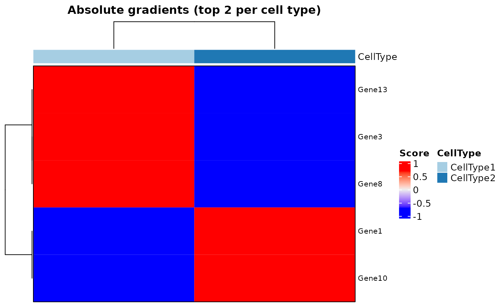
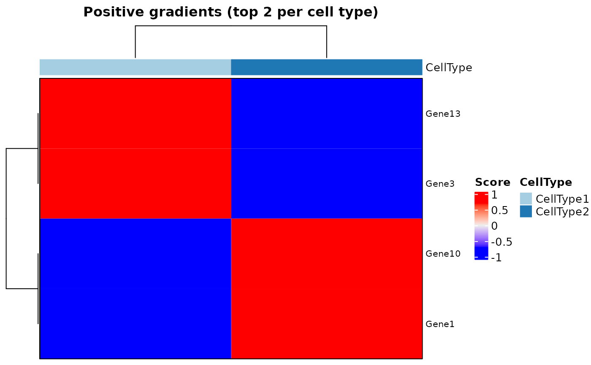
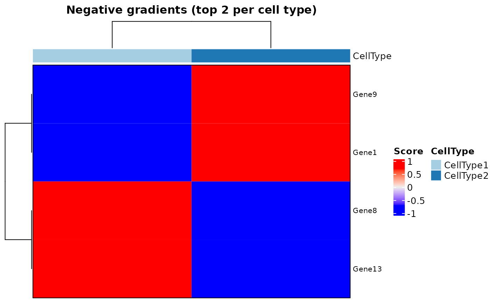

Plot a heatmap of gradients of classes / loss function wtih respect to the input
Source:R/interGradientsDL.R
plotHeatmapGradsAgg.RdPlot a heatmap showing the top positive and negative gene average gradients per cell type.
Arguments
- object
SpatialDDLSobject with aDeconvDLModelobject containing gradients in theinterpret.gradientsslot.- method
Method to calculate gradients with respect to input features. It can be
'class'(gradients of predicted classes w.r.t. input features) or'loss'(gradients of loss w.r.t. input features) ('class'by default).- top.n.genes
Top n genes (positive and negative) taken per cell type.
- scale.gradients
Whether to calculate feature-wise z-scores of gradients (
TRUEby default).
Value
A list of Heatmap-class objects, one for top
positive and another one for top negative gradients.
Examples
# \donttest{
set.seed(123)
sce <- SingleCellExperiment::SingleCellExperiment(
assays = list(
counts = matrix(
rpois(30, lambda = 5), nrow = 15, ncol = 10,
dimnames = list(paste0("Gene", seq(15)), paste0("RHC", seq(10)))
)
),
colData = data.frame(
Cell_ID = paste0("RHC", seq(10)),
Cell_Type = sample(x = paste0("CellType", seq(2)), size = 10,
replace = TRUE)
),
rowData = data.frame(
Gene_ID = paste0("Gene", seq(15))
)
)
SDDLS <- createSpatialDDLSobject(
sc.data = sce,
sc.cell.ID.column = "Cell_ID",
sc.gene.ID.column = "Gene_ID",
sc.filt.genes.cluster = FALSE
)
#> === Spatial transcriptomics data not provided
#> === Processing single-cell data
#> - Filtering features:
#> - Selected features: 15
#> - Discarded features: 0
#>
#> === No mitochondrial genes were found by using ^mt- as regrex
#>
#> === Final number of dimensions for further analyses: 15
SDDLS <- genMixedCellProp(
object = SDDLS,
cell.ID.column = "Cell_ID",
cell.type.column = "Cell_Type",
num.sim.spots = 50,
verbose = TRUE
)
#>
#> === The number of mixed profiles that will be generated is equal to 50
#>
#> === Training set cells by type:
#> - CellType1: 4
#> - CellType2: 3
#> === Test set cells by type:
#> - CellType1: 2
#> - CellType2: 1
#> === Probability matrix for training data:
#> - Mixed spots: 34
#> - Cell types: 2
#> === Probability matrix for test data:
#> - Mixed spots: 16
#> - Cell types: 2
#> DONE
SDDLS <- simMixedProfiles(SDDLS)
#> === Setting parallel environment to 1 thread(s)
#>
#> === Generating train mixed profiles:
#>
#> === Generating test mixed profiles:
#>
#> DONE
SDDLS <- trainDeconvModel(
object = SDDLS,
batch.size = 12,
num.epochs = 5
)
#> === Training and test from stored data
#> Using only simulated mixed samples
#> Using only simulated mixed samples
#> Model: "SpatialDDLS"
#> _____________________________________________________________________
#> Layer (type) Output Shape Param #
#> =====================================================================
#> Dense1 (Dense) (None, 200) 3200
#> _____________________________________________________________________
#> BatchNormalization1 (BatchNorm (None, 200) 800
#> _____________________________________________________________________
#> Activation1 (Activation) (None, 200) 0
#> _____________________________________________________________________
#> Dropout1 (Dropout) (None, 200) 0
#> _____________________________________________________________________
#> Dense2 (Dense) (None, 200) 40200
#> _____________________________________________________________________
#> BatchNormalization2 (BatchNorm (None, 200) 800
#> _____________________________________________________________________
#> Activation2 (Activation) (None, 200) 0
#> _____________________________________________________________________
#> Dropout2 (Dropout) (None, 200) 0
#> _____________________________________________________________________
#> Dense3 (Dense) (None, 2) 402
#> _____________________________________________________________________
#> BatchNormalization3 (BatchNorm (None, 2) 8
#> _____________________________________________________________________
#> ActivationSoftmax (Activation) (None, 2) 0
#> =====================================================================
#> Total params: 45,410
#> Trainable params: 44,606
#> Non-trainable params: 804
#> _____________________________________________________________________
#>
#> === Training DNN with 34 samples:
#>
#> === Evaluating DNN in test data (16 samples)
#> - loss: NaN
#> - accuracy: 0.5
#> - mean_absolute_error: NaN
#> - categorical_accuracy: 0.5
#>
#> === Generating prediction results using test data
#> DONE
## calculating gradients
SDDLS <- interGradientsDL(SDDLS)
plotHeatmapGradsAgg(SDDLS, top.n.genes = 2)
#> $Absolute

#>
#> $Positive

#>
#> $Negative

#>
# }